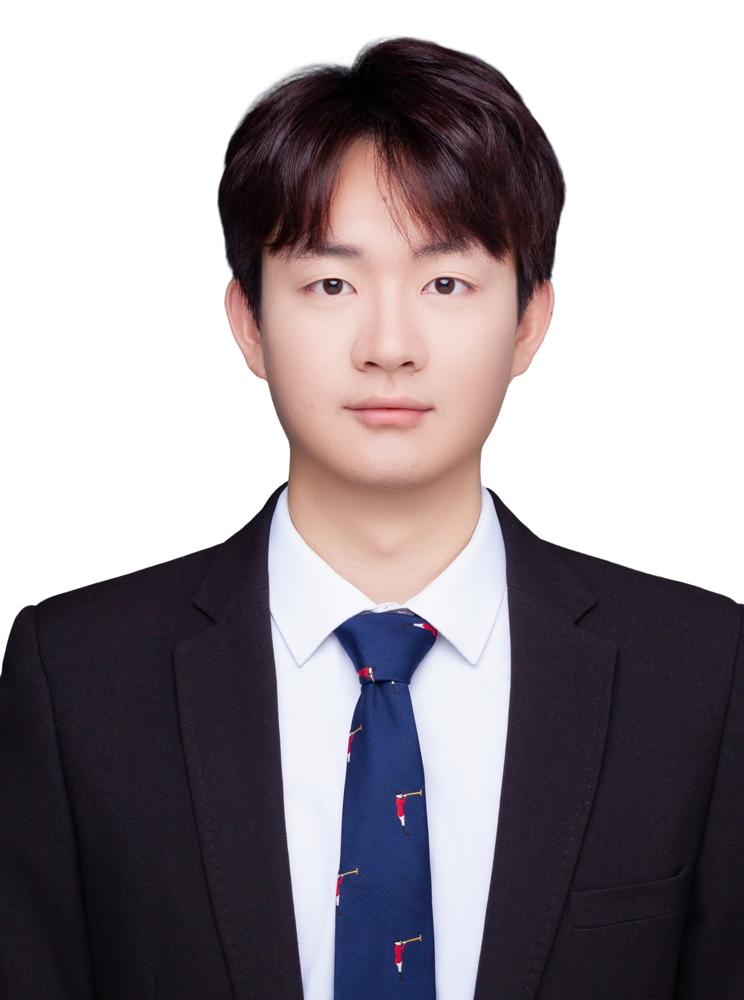
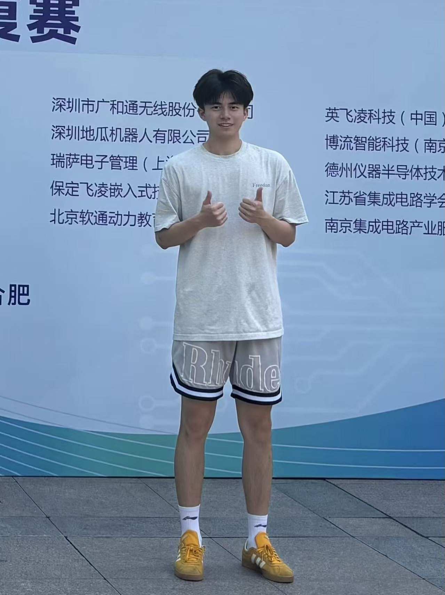

Jiayi Liu(刘佳宜)
武汉理工大学电子信息工程系副教授，博士/硕士生导师，长期从事于机器人智能拆解领域的研究工作。主持国家自然科学基金1项、湖北省自然科学基金1项和武汉市知识创新专项（曙光计划）1项；作为骨干成员参与国家自然科学基金面上项目等国家级项目5项。已发表SCI/EI论文20余篇，Google学术引用1500余次；参与编写英文学术专著3部。受邀在国际、国内学术会议上作受邀报告多次；荣获2022 IEEE CASE等国际会议论文奖励3次。 担任国家自然科学基金函评专家、教育部学位论文评审专家、数字孪生青年学者委员会（中国）第一届委员会常务委员、国际研讨会的共同主席/委员会成员5届次，IEEE Transactions on Industrial Informatics、IEEE Transactions on Automation Science and Engineering等国际顶级期刊审稿人。 所承担的科研、教学工作，获中央广播电视总台央视新闻报道多次（数字化赋能-让教与学更智慧；科技创新-让生活更美好）。
机器人拆解: 拆解感知、建模、决策、优化与控制理论及方法
人工智能算法: 深度学习、强化学习、大语言模型在先进制造中的应用
嵌入式系统: 嵌入式系统及其应用
人工智能算法: 深度学习、强化学习、大语言模型在先进制造中的应用
嵌入式系统: 嵌入式系统及其应用
📚 学术成果
17. Yuning Han, Jiayi Liu#, Lei Qi, Wenjun Xu.
Digital twin modelling and its evaluation method of the robotic disassembly process.
International Journal of Computer Integrated Manufacturing.
2026.
[PDF]
16. Jiayi Liu, Zhenlu Xu, Wenjun Xu#, Lei Qi, Yuning Han, Zude Zhou.
Robotic disassembly sequence dynamic planning under uncertain irremovable condition using dueling deep Q-network based on digital twin.
Robotics and Computer-Integrated Manufacturing.
2026, 98: 103132.
[PDF]
15. Jiayi Liu, Xiaolong Zhang, Wenjun Xu#, Zude Zhou.
Mechanism driven robotic compliant disassembly strategy for disassembling peg-holes under different maintenance conditions.
International Journal of Production Research.
2025, 1-19.
[PDF]
14. Lei Qi, Wenjun Xu#, Kaipu Wang, Jiayi Liu, Xun Ye, Hang Yang, Yi Zhong.
Mixed-model product disassembly sequence optimization based on cognitive digital twin.
Journal of Manufacturing Systems.
2025, 82, 497-508.
[PDF]
13. 涂小飞, 刘佳宜#, 徐文君, 张小龙, 仲金山.
基于改进型遗传算法的海上无人集群协同作业需求−功能动态匹配研究.
中国舰船研究.
2025.
[PDF]
12. Yaping Ren#, Zhehao Xu, Yanzi Zhang, Jiayi Liu, Leilei Meng, Wenwen Lin.
A rollout heuristic-reinforcement learning hybrid algorithm for disassembly sequence planning with uncertain depreciation condition and diversified recovering strategies.
Advanced Engineering Informatics.
2025, 64, 103082.
[PDF]
11. Jiayi Liu, Zhenlu Xu, Heng Xiong, Qiwen Lin, Wenjun Xu#, Zude Zhou.
Digital twin-driven robotic disassembly sequence dynamic planning under uncertain missing condition.
IEEE Transactions on Industrial Informatics.
2023, 19(12), 11846-11855.
[PDF]
10. Wenjun Xu, Zhihao Li, Jiayi Liu#, Jia Cui, Yang Hu.
Virtual reconfiguration method of robotic mixed-model assembly line using bees algorithm based on digital twin.
IEEE Transactions on Automation Science and Engineering.
2023, 21(3), 2211-2222.
[PDF]
9. Wenjun Xu, Jia Cui, Bin Liu, Jiayi Liu#, Bitao Yao, Zude Zhou.
Human-robot collaborative disassembly line balancing considering the safe strategy in remanufacturing.
Journal of Cleaner Production.
2021, 324, 129158.
[PDF]
8. Jiayi Liu, Zude Zhou, Duc Truong Pham, Wenjun Xu#, Jia Cui, Can Yang.
Service platform for robotic disassembly planning in remanufacturing.
Journal of Manufacturing Systems.
2020, 57, 338-356.
[PDF]
7. Wenjun Xu, Quan Tang, Jiayi Liu#, Zhihao Liu, Zude Zhou, Duc Truong Pham.
Disassembly sequence planning using discrete Bees algorithm for human-robot collaboration in remanufacturing.
Robotics and computer-integrated manufacturing.
2020, 62, 101860.
[PDF]
6. Jiayi Liu, Zude Zhou, Duc Truong Pham, Wenjun Xu#, Chunqian Ji, Quan Liu.
Collaborative optimization of robotic disassembly sequence planning and robotic disassembly line balancing problem using improved discrete Bees algorithm in remanufacturing.
Robotics and computer-integrated manufacturing.
2020, 61, 101829.
[PDF]
5. Zude Zhou, Jiayi Liu, Duc Truong Pham, Wenjun Xu#, F. Javier Ramírez, Chunqian Ji, Quan Liu.
Disassembly sequence planning: Recent developments and future trends.
Proceedings of the Institution of Mechanical Engineers Part B Journal of Engineering Manufacture.
2019, 233(5), 1450-1471.
[PDF]
4. Jiayi Liu#, Zude Zhou, Wenjun Xu, Jiwei Hu.
Adaptive support-weight stereo-matching approach with two disparity refinement steps.
IETE Journal of Research.
2019, 65(3), 310-319.
[PDF]
3. Jiayi Liu, Zude Zhou, Duc Truong Pham, Wenjun Xu, Junwei Yan#, Aiming Liu, Chunqian Ji, Quan Liu.
An improved multi-objective discrete bees algorithm for robotic disassembly line balancing problem in remanufacturing.
The International Journal of Advanced Manufacturing Technology.
2018, 97(9), 3937-3962.
[PDF]
2. Jiayi Liu, Zude Zhou, Duc Truong Pham, Wenjun Xu#, Chunqian Ji, Quan Liu.
Robotic disassembly sequence planning using enhanced discrete bees algorithm in remanufacturing.
International Journal of Production Research.
2018, 56(9), 3134-3151.
[PDF]
1. Jiayi Liu, Zude Zhou, Guoping Ding#, Huaqiang Wang.
Dynamic Magnetic Field Measurement in the Air Gap of Magnetic Bearings Based on FBG-GMM Sensor.
Journal of the Optical Society of Korea.
2015, 19(6), 575-585.
[PDF]
🖼️ 团队成员
☆ 在读学生
2025级博士
向宇光
2023级硕士
张小龙

涂小飞
仲金山
2024级硕士
王远达
陆天慧
潘红臣
2025级硕士

毛朱睿
王宏钰
刘瑞浩
林宇航
郭瑞强
本硕班学生
陶冶

喻俊杰
陈木子
☆ 毕业学生
2022级硕士：徐振璐（国家奖学金2次，比亚迪奖学金1次；就业，华为技术有限公司）; 韩雨凝（就业，中航航空电子有限公司）
2022级硕士（协助培养）：王睿章（就业，比亚迪股份有限公司）; 管茂霖（就业，比亚迪股份有限公司）；刘云光（就业，选调生）；丁杰（就业，中兴通讯股份有限公司）
🖼️ 团队新闻
▷ 2025年9月20日，Artificial Intelligence in Robotic Disassembly研究团队学术主页上线了！